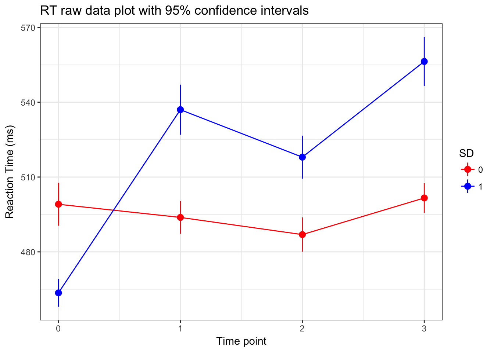
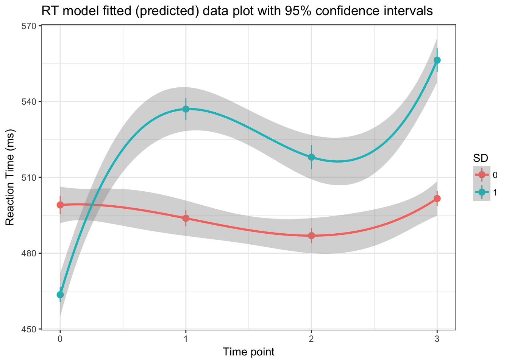

(only between 100-4000milliseconds)
KSS_Complete_TIDY <- KSS_Complete_TIDY[which(KSS_Complete_TIDY$reaction_time > 100 & KSS_Complete_TIDY$reaction_time < 4000),]model.1<-gls(reaction_time~1, data=KSS_Complete_TIDY, na.action=na.omit)
summary(model.1)## Generalized least squares fit by REML
## Model: reaction_time ~ 1
## Data: KSS_Complete_TIDY
## AIC BIC logLik
## 254736.9 254752.6 -127366.5
##
## Coefficients:
## Value Std.Error t-value p-value
## (Intercept) 507.0326 1.441072 351.8441 0
##
## Standardized residuals:
## Min Q1 Med Q3 Max
## -2.0450515 -0.5239775 -0.2066674 0.2164128 16.9834834
##
## Residual standard error: 198.5439
## Degrees of freedom: 18982 total; 18981 residualmodel.2<-lme(reaction_time~1, random=~1|ID, data=KSS_Complete_TIDY, na.action=na.omit)
anova(model.1,model.2) #model with random effects is significantly better## Model df AIC BIC logLik Test L.Ratio p-value
## model.1 1 2 254736.9 254752.6 -127366.5
## model.2 2 3 250972.2 250995.8 -125483.1 1 vs 2 3766.687 <.0001summary(model.2)## Linear mixed-effects model fit by REML
## Data: KSS_Complete_TIDY
## AIC BIC logLik
## 250972.2 250995.8 -125483.1
##
## Random effects:
## Formula: ~1 | ID
## (Intercept) Residual
## StdDev: 100.6119 176.862
##
## Fixed effects: reaction_time ~ 1
## Value Std.Error DF t-value p-value
## (Intercept) 513.3558 7.680223 18805 66.84126 0
##
## Standardized Within-Group Residuals:
## Min Q1 Med Q3 Max
## -4.4459521 -0.4024097 -0.1709972 0.1193008 19.0578603
##
## Number of Observations: 18982
## Number of Groups: 177VarCorr(model.2)## ID = pdLogChol(1)
## Variance StdDev
## (Intercept) 10122.76 100.6119
## Residual 31280.16 176.862010122.76/(10122.76+31280.16) #25% of variance can be attributed to variance in RT between individuals## [1] 0.2444939# assessing the best time polynomial
model.3a<-lme(reaction_time~1, random=~1|ID, data=KSS_Complete_TIDY, na.action=na.omit, method="ML")
# model.3b<-lme(reaction_time~time, random=~1|ID, data=KSS_Complete_TIDY, na.action=na.omit, method="ML") # DOESN'T CONVERGE
model.3c<-lme(reaction_time~time+I(time^2), random=~1|ID, data=KSS_Complete_TIDY, na.action=na.omit, method="ML")
model.3d<-lme(reaction_time~time+I(time^2)+I(time^3), random=~1|ID, data=KSS_Complete_TIDY, na.action=na.omit, method="ML")
anova(model.3a, model.3c, model.3d) #the cubic model is the best## Model df AIC BIC logLik Test L.Ratio p-value
## model.3a 1 3 250978.2 251001.7 -125486.1
## model.3c 2 5 250859.0 250898.2 -125424.5 1 vs 2 123.20989 <.0001
## model.3d 3 6 250795.7 250842.8 -125391.9 2 vs 3 65.22911 <.0001summary(model.3d)## Linear mixed-effects model fit by maximum likelihood
## Data: KSS_Complete_TIDY
## AIC BIC logLik
## 250795.7 250842.8 -125391.9
##
## Random effects:
## Formula: ~1 | ID
## (Intercept) Residual
## StdDev: 100.2471 175.9795
##
## Fixed effects: reaction_time ~ time + I(time^2) + I(time^3)
## Value Std.Error DF t-value p-value
## (Intercept) 486.5475 7.985157 18802 60.93148 0
## time 93.7855 9.905519 18802 9.46801 0
## I(time^2) -72.5765 8.743039 18802 -8.30107 0
## I(time^3) 15.5206 1.920221 18802 8.08269 0
## Correlation:
## (Intr) time I(t^2)
## time -0.157
## I(time^2) 0.096 -0.960
## I(time^3) -0.073 0.913 -0.989
##
## Standardized Within-Group Residuals:
## Min Q1 Med Q3 Max
## -4.5280682 -0.4028480 -0.1685624 0.1156413 19.0294575
##
## Number of Observations: 18982
## Number of Groups: 177# assessing the best random effects term
model.4a<-lme(reaction_time~time+I(time^2)+I(time^3), random=~1|ID, data=KSS_Complete_TIDY, na.action=na.omit, method="REML")
model.4b<-lme(reaction_time~time+I(time^2)+I(time^3), random=~time|ID, data=KSS_Complete_TIDY, na.action=na.omit, method="REML")
model.4c<-lme(reaction_time~time+I(time^2)+I(time^3), random=~time+I(time^2)|ID, data=KSS_Complete_TIDY, na.action=na.omit, method="REML")
# model.4d<-lme(reaction_time~time+I(time^2)+I(time^3), random=~time+I(time^2)+I(time^3)|ID, data=KSS_Complete_TIDY, na.action=na.omit, method="REML") #doesn't converge
anova(model.4a,model.4b,model.4c) #having random slopes for quadratic term for time is best## Model df AIC BIC logLik Test L.Ratio p-value
## model.4a 1 6 250782.2 250829.3 -125385.1
## model.4b 2 8 250479.2 250542.0 -125231.6 1 vs 2 306.9639 <.0001
## model.4c 3 11 250215.8 250302.2 -125096.9 2 vs 3 269.3950 <.0001#additing in variables can that explain intercept and slope variability
model.6a<-lme(reaction_time~time+I(time^2)+I(time^3), random=~time+I(time^2)|ID, data=KSS_Complete_TIDY, na.action=na.omit, method="ML")
model.6b<-lme(reaction_time~time+I(time^2)+I(time^3)+SD, random=~time+I(time^2)|ID, data=KSS_Complete_TIDY, na.action=na.omit, method="ML")
anova(model.6a,model.6b)#condition doesn't predict intercept, which is good because there should be no difference## Model df AIC BIC logLik Test L.Ratio p-value
## model.6a 1 11 250232.2 250318.6 -125105.1
## model.6b 2 12 250234.2 250328.4 -125105.1 1 vs 2 0.02125224 0.8841model.6c <-lme(reaction_time~time*SD+I(time^2)+I(time^3), random=~time+I(time^2)|ID, data=KSS_Complete_TIDY, na.action=na.omit, method="ML")
anova(model.6a,model.6c) #sleep deprivation explains variance in slope of time (linear)## Model df AIC BIC logLik Test L.Ratio p-value
## model.6a 1 11 250232.2 250318.6 -125105.1
## model.6c 2 13 250202.8 250304.9 -125088.4 1 vs 2 33.39501 <.0001model.6d <-lme(reaction_time~time*SD+I(time^2)*SD+I(time^3), random=~time+I(time^2)|ID, data=KSS_Complete_TIDY, na.action=na.omit, method="ML") #sleep deprivation explains variance in the slope of time (quadratic)
anova(model.6a,model.6d)## Model df AIC BIC logLik Test L.Ratio p-value
## model.6a 1 11 250232.2 250318.6 -125105.1
## model.6d 2 14 250196.0 250305.9 -125084.0 1 vs 2 42.25551 <.0001model.6e <-lme(reaction_time~time*SD+I(time^2)*SD+I(time^3)*SD, random=~time+I(time^2)|ID, data=KSS_Complete_TIDY, na.action=na.omit, method="ML") #sleep deprivation explains variance in the slope of time (quadratic)
anova(model.6a,model.6e) #sleep deprivation explains variance in the slope of time (cubic)## Model df AIC BIC logLik Test L.Ratio p-value
## model.6a 1 11 250232.2 250318.6 -125105.1
## model.6e 2 15 250173.8 250291.5 -125071.9 1 vs 2 66.4471 <.0001There is an interaction between the condition and linear effect of time, the quadratic effect of time and the cubic effect of time. The p value for tells you whether the difference in the curvature for the two condition is statistically significant.
summary(model.6e)## Linear mixed-effects model fit by maximum likelihood
## Data: KSS_Complete_TIDY
## AIC BIC logLik
## 250173.8 250291.5 -125071.9
##
## Random effects:
## Formula: ~time + I(time^2) | ID
## Structure: General positive-definite, Log-Cholesky parametrization
## StdDev Corr
## (Intercept) 91.22106 (Intr) time
## time 82.73915 -0.047
## I(time^2) 27.96994 0.013 -0.947
## Residual 170.94478
##
## Fixed effects: reaction_time ~ time * SD + I(time^2) * SD + I(time^3) * SD
## Value Std.Error DF t-value p-value
## (Intercept) 503.5467 10.716187 18798 46.98936 0.0000
## time 9.6891 16.946393 18798 0.57175 0.5675
## SD -32.3790 14.670430 18798 -2.20709 0.0273
## I(time^2) -21.0836 12.781896 18798 -1.64949 0.0991
## I(time^3) 5.9908 2.707998 18798 2.21228 0.0270
## time:SD 160.9790 23.443607 18798 6.86665 0.0000
## SD:I(time^2) -99.2619 17.825225 18798 -5.56862 0.0000
## SD:I(time^3) 18.6685 3.794606 18798 4.91974 0.0000
## Correlation:
## (Intr) time SD I(t^2) I(t^3) tim:SD SD:I(^2
## time -0.195
## SD -0.723 0.143
## I(time^2) 0.122 -0.908 -0.089
## I(time^3) -0.092 0.768 0.068 -0.960
## time:SD 0.141 -0.723 -0.182 0.656 -0.555
## SD:I(time^2) -0.085 0.651 0.110 -0.717 0.689 -0.907
## SD:I(time^3) 0.063 -0.549 -0.081 0.685 -0.714 0.767 -0.960
##
## Standardized Within-Group Residuals:
## Min Q1 Med Q3 Max
## -5.1834932 -0.3798376 -0.1541995 0.1219331 19.0476255
##
## Number of Observations: 18982
## Number of Groups: 177KSS_Complete_TIDY$SD <- as.factor(KSS_Complete_TIDY$SD)
RT.final.model <-lme(reaction_time~time*SD+I(time^2)*SD+I(time^3)*SD, random=~time+I(time^2)|ID, data=KSS_Complete_TIDY, na.action=na.omit, method="ML")
#raw data plot with 95% confidence intervals
ggplot(KSS_Complete_TIDY, aes(time, reaction_time, colour=SD)) +
stat_summary(fun.data=mean_cl_normal, fun.args=list(conf.int=0.95), geom="pointrange") +
labs(y="Reaction Time (ms)", x="Time point") +
theme_bw() + scale_color_manual(values=c("red", "blue")) +
ggtitle("RT raw data plot with 95% confidence intervals") + stat_summary(fun.y=mean, geom="line")
#fitted model (aka predictive values) plot with 95% confidence intervals
ggplot(KSS_Complete_TIDY, aes(time, reaction_time, colour=SD)) +
labs(y="Reaction Time (ms)", x="Time point") +
ggtitle("RT model fitted (predicted) data plot with 95% confidence intervals") +
theme_bw() + stat_summary(aes(y=fitted(RT.final.model)), fun.data=mean_cl_normal, fun.args=list(conf.int=0.95), geom="pointrange") + stat_smooth(method = "lm", formula =y ~ poly(x,3))